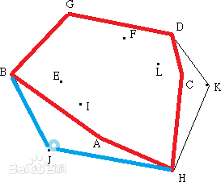

凸包是计算几何领域一切问题的基础。什么是凸包？顾名思义，凸包就是形如下图的一个凸多边形：
凸包又有什么性质？经过观察发现，
一些顶点的连线形成了一个能够包住平面上其它所有的点的凸多边形。凸多边形的顶点叫做
极点，例如上图中的\(G,B,J,H,K,D\)；凸多边形的边叫做
极边，例如上图中的\(GB,BJ,JH,HK,KD,DG\)。很显然，二维平面上\(n\)个点的凸包，至少含有3个极点，至多含有\(n\)个极点，并且极点数始终等于极边数；此外，将所有点朝着平面任意一条直线投影，投影直线上位于头和尾的两个点一定是极点，因为极点是最外边的点。
这两个简单的结论需要留意，之后的算法分析会再次提到它。
极点，极边又有哪些特殊之处？再次观察发现，
经过每个极点都存在许多条直线，使得其它所有点都在这些直线的一侧，而极边就是这些直线中的一条。在计算几何中，位置关系与方向有关。例如：\(E\)点在直线\(JB\)的右边，也在直线\(BJ\)的左边。
如何判断点在线的哪一侧？这个问题称作\(ToLeft\)测试，方法有很多，下面介绍一个经典的解决方案。设\(B,J,E\)三点坐标分别为\((x_1,y_1),(x_2,y_2),(x_3,y_3)\)，
下面的行列式值为正，当且仅当\(BJE\)为逆时针顺序。实际上在解析几何中学过，这个行列式的值取绝对值，即为两倍三角形\(BJE\)的面积。
\(\left| \begin{array} {ccc}
x_1 & y_1 & 1 \\
x_2 & y_2 & 1 \\
x_3 & y_3 & 1 \\
\end{array}\right| =x_1y_2+x_2y_3+y_1x_3-x_3y_2-x_1y_3-x_2y_1\)
对比计算斜率或是计算角度的方法，这种算法只需要算乘法，不需要计算除法，三角函数等容易产生误差的操作，还不需要考虑除0等特殊情况。
很显然，\(ToLeft\)测试的时间复杂度为\(o(1)\)。
这里再往深走一步，如何判断一个点在
凸多边形的内部还是外部？这个问题被称作\(InConvexPolygon\)测试。还是以之前的这张图为例，\(E\)是凸多边形内部的一点，这时我们发现：
如果逆时针走过凸多边形的边，\(E\)点永远在你的左侧；而顺时针走过凸多边形的边，\(E\)点永远在右侧。因此只要使用\(n\)遍\(ToLeft\)测试即可完成任务，
\(InConvexPolygon\)测试的时间复杂度为\(o(n)\)。作为一个特例，判断点是否在三角形内的时间复杂度为\(o(1)\)。
如果要
询问多次点是否在
凸多边形内怎么办？对凸多边形进行预处理，可以把单次询问的时间复杂度提升到\(o(\log n)\)。
以\(J\)为原点，将它与其它顶点的连线\(JB,JG,JD,JK,JH\)斜率排序。如果要询问\(E\)是否在凸多边形内部，可以计算\(JE\)的斜率，使用
二分查找得到\(JE\)的斜率介于\(JG\)与\(JD\)之间（使用\(o(\log n)\)复杂度），再判断\(E\)是否处于三角形\(JGD\)之内即可（使用o(1)复杂度）。
这种算法只适合凸多边形形状固定并且需要多次查询，其中预处理的复杂度为\(o(n\log n)\)，单次查询的复杂度为\(o(\log n)\)。
如果要判断点是否在
一般的多边形内呢？与凸多边形不同，一般的多边形可能是凹的，也有可能有孔洞。但是他有一个性质：
对于一般多边形内部区域中的一点，我们在外部随机找一点并随意地用一根曲线连接它们，会发现曲线经过多边形边界奇数次。将曲线进出多边形的情况排成一列，会发现曲线不可能连续两次进入一个多边形，也不可能连续两次走出一个多边形，所以一定是
进出进出进出这样的排列。这么想的话上面的性质就是显然了。
回到凸包身上，给出平面上\(n\)个点的坐标，如何构造凸包？这个问题有两种思考方式，一种是从
极点入手，找到所有极点，就等于找到了凸包；另外一种是从
极边入手，找到所有极边，也能确定凸包。
那么先从极点入手。极点可以通俗的想象成最外面的点，因此极点必然不可能被别人包住。换句话说，
极点不被\(n\)个顶点可以组成的所有三角形包住。根据这个思路，可以设计出
第一个算法：初始设置所有顶点为极点，枚举所有可能的三角形，再枚举\(n\)个点是否在三角形内部，若在内部则标记它不是极点，这样最后剩下的就是极点。
其中，枚举三角形是\(o(n^3)\)，内层循环是\(o(n)\)。容易看出这个算法的复杂度是\(o(n^4)\)，十分低效。低效的原因在于没有利用好凸包的性质。
第二个算法是通过迭代构造凸包，依次遍历顶点，调整极点集合。假设按照字典序遍历到\(E\)，
此时\(ABDC\)构成凸包，而\(E\)在凸多边形\(ABDC\)的内部，因此不改变极点集合，继续遍历\(F\)：
当遍历到\(J\)时，\(ABGDCH\)构成凸包，\(J\)点位于凸多边形外部（实际上这种情况早在\(D\)点就已经发生了，但为了做图方便这里才讨论），因此需要将\(J\)点插入极点集合：

理想中的结果是删去\(A\)后将\(J\)插在\(B,H\)之间，构成新的凸包\(JBGDCH\)。如何找到位置呢？还是逆时针沿着凸包的边走一遍，
会发现\(J\)点位于\(HC,CD,DG,GB\)边的左侧，而位于\(BA,AH\)边的右侧！分界点\(B,H\)正是\(J\)要插入的位置，而分界点\(B,H\)之间的点就是要从极点集合删去的点。
一共要遍历所有\(n\)个点，每个点上的操作是顺着凸包走一圈，做ToLeft测试，复杂度为\(o(n)\)，因此算法二的总时间复杂度是\(o(n^2)\)。
接下来从
极边入手。注意到所有点都在极边的同侧，因此
算法三可以轻易的想到：初始设置所有边都不是极边，枚举所有边，遍历所有点，如果所有点都在极边的一侧，则标记其为极边。
遍历所有边复杂度为\(o(n^2)\)，内层循环需要做\(o(n)\)次ToLeft测试。因此算法三总时间复杂度为\(o(n^3)\)。
这个复杂度仍然是不能被接受的，于是提出了更聪明的
算法四：Jarvis March算法。首先使用上文提到的投影性质，会发现\(n\)个点中，
纵坐标最小的一堆点中最靠左的那个一定是极点，例如\(H\)点，这一步操作叫做\(LowestThenLeft\)。找到\(H\)点后，其实是可以直接使用\(o(n)\)复杂度找到下一个极点的。以\(H\)点为原点，找最左边的点，这一步称为
极角排序：
如果按照字典序寻找，具体过程为：连接\(HA\)；\(B\)位于\(HA\)右边，跳过；\(C\)位于\(HA\)右边，跳过；...；\(I\)位于\(HA\)右边，跳过；\(J\)位于\(HA\)左边，连\(HJ\)；\(K\)位于\(HJ\)右边，跳过。因此\(H\)的下一个极点是\(J\)，以此类推，
直到出现一个点，它的下一个极点是\(H\)（起点）时，就找遍了所有的极点了。容易验证算法四的复杂度为\(o(cn)\)，其中\(c\)为凸包的极点个数。
上述4个算法的构造过程，体现了对于凸包性质的充分挖掘。
尽管算法一和算法三较低效，但是学习他们也让我们对凸包的理解更深了，养成了更好的直观，我认为这是十分有用的。今后面对不同的问题，可能会用到算法一和算法三的性质。
关于算法四，其实它的复杂度在执行前是未知的，最好为\(o(n)\)，最差为\(o(n^2)\)。
后面会学习到\(o(n\log n)\)的Graham Scan算法，将其与算法四融合，可以得到一些自适应的求解凸包算法。